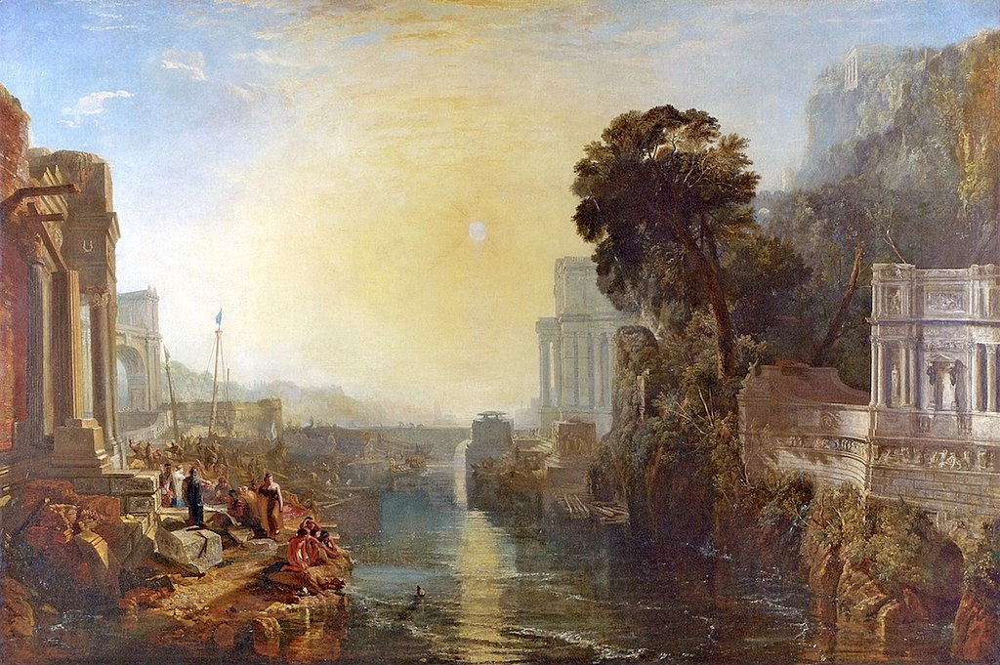

<head>
<meta charset="UTF-8" />
<meta name="keywords" content="drawing, painting" />
<meta name="description" content="drawings by Sunjy" />
<title>Sunjy</title>
<link rel="shortcut icon" type="image/x-icon" href="../../mImages/mCommon/favicon.ico" media="screen" />
<link rel="stylesheet" type="text/css" href="../../mCsses/mCommon/mCssA.css" />
<link rel="stylesheet" type="text/css" href="../../mCsses/mCommon/mCssB.css" />
<link rel="stylesheet" type="text/css" href="../../mCsses/mCommon/mCssC.css" />
<link rel="stylesheet" type="text/css" href="../../mCsses/mCommon/mCssD.css" />
<link rel="stylesheet" type="text/css" href="../../mCsses/mContent/mCssA.css" />
<link rel="stylesheet" type="text/css" href="../../mCsses/mContent/mCssB.css" />
<link rel="stylesheet" type="text/css" href="../../mCsses/mContent/mCssC.css" />
<link rel="stylesheet" type="text/css" href="../../mCsses/mContent/mCssD.css" />
</head>
<script type="text/javascript" src="../../mScripts/mContent/mContentAA.js" /></script>
<script type="text/javascript" src="../../mScripts/mContent/mContentAB.js" /></script>
<script type="text/javascript" src="../../mScripts/mContent/mContentAC.js" /></script>
<script type="text/javascript" src="../../mScripts/mContent/mContentAD.js" /></script>
<script type="text/javascript"></script> 
<script type="text/javascript">
document.write('<div class="mImgAbsolute"></div>');
/*
document.write('<p class="mFontSizeBColor" />From a white paper...</p>');
document.write('<table class="center"><tr><td>');
document.write('');
document.write('</td></tr></table>');
*/
</script>


<script type="text/javascript">
document.write('<p class="mFontSizeBColor" />Dido Building Carthage</p>');
document.write('<p class="mFontSizeSColor" />“Dido Building Carthage” by J. M. W. Turner depicts the classic story from Virgil’s Aeneid in which Dido, the figure in blue and white on the left, is directing the builders of the new city of Carthage. The figure in front of her, wearing armor, is her Trojan lover Aeneas.<br><br>The children playing with a toy boat symbolize the future naval power of Carthage, and the tomb of her dead husband Sychaeus, on the right bank of the estuary, foreshadows the eventual destruction of Carthage by the Roman descendants of Aeneas.<br><br>The painting was first exhibited at the Royal Academy summer exhibition in 1815 and was widely admired, but Turner kept the picture until his death and left it to the nation in the Turner Bequest.<br><br>Joseph Mallord William Turner, later more commonly called J. M. W. Turner, entered the Royal Academy of Art in 1789, aged 14, and his first watercolor was accepted for the Royal Academy summer exhibition of 1790 when Turner was 15.<br><br>From a young art student trained in executing topographical watercolors, he became one of the most original artists of his time.<br><br>Turner was a Romantic painter, printmaker, and watercolorist, today known for his vivid coloration, imaginative landscapes, and turbulent marine paintings.<br><br>As a private, eccentric, and reclusive figure, Turner was controversial throughout his career. He left over 2,000 paintings and 19,000 drawings and sketches.<br><br>Historical background to Dido Building Carthage<br><br>Dido<br><br>Dido was, according to ancient Greek and Roman sources, the founder and first queen of Carthage. Today she is primarily remembered for her role in the epic,<br><br>Aeneid, by the Roman poet Virgil. In the poem, Aeneas, her lover leaves Carthage to found a city in Italy, leaving behind a broken-hearted Dido who committed suicide by stabbing herself.<br><br>Aeneas<br><br>Aeneas was according to Greco-Roman mythology, a Trojan hero, the son of the prince Anchises and the goddess Aphrodite (Venus).<br><br>His father was a first cousin of King Priam of Troy, making Aeneas a second cousin to Hector and Paris. He is mentioned in Homer’s Iliad, but in Roman mythology, he is an ancestor of Romulus and Remus, who were the founders of Rome.<br><br>Carthage<br><br>Carthage became the capital city of the ancient Carthaginian civilization, located on the eastern side of the Lake of Tunis in current-day Tunisia.<br><br>A town developed from a Phoenician colony into the capital of an empire dominating the Mediterranean during the first millennium BC.<br><br>The  Carthaginian empire became a threat to the Roman Empire, and its ancient city was destroyed by the Roman Republic in the Third Punic War in 146 BC and was later re-developed as Roman Carthage.<br><br>The Roman city was captured and occupied by Muslim conquest in 698.<br><br>Carthage Foundation Legends<br><br>According to Roman history, Phoenician colonists from modern-day Lebanon, led by Dido, founded Carthage c. 814 BC. Dido was an exiled princess of the ancient Phoenician city of Tyre.<br><br>At its peak, the metropolis she founded ruling 300 other cities around the western Mediterranean Sea and leading the Phoenician world.<br><br>Virgil’s Roman epic, the Aeneid, first introduces Queen Dido. Virgil ends his legend of Dido with the story that, when Aeneas farewells Dido, her heartbroken, she orders a pyre to be built where she falls upon Aeneas’ sword.<br><br>As she lies dying, she predicts eternal strife between Aeneas’ people and her own. Aeneas goes on to found the predecessor-state of the Roman Kingdom.<br></p>');
document.write('<table class="center" /><tr><td>');
document.write('<br>The children playing with a toy boat symbolize the future naval power of Carthage, and the tomb of her dead husband Sychaeus, on the right bank of the estuary, foreshadows the eventual destruction of Carthage by the Roman descendants of Aeneas.<br><br>The painting was first exhibited at the Royal Academy summer exhibition in 1815 and was widely admired, but Turner kept the picture until his death and left it to the nation in the Turner Bequest.<br><br>Joseph Mallord William Turner, later more commonly called J. M. W. Turner, entered the Royal Academy of Art in 1789, aged 14, and his first watercolor was accepted for the Royal Academy summer exhibition of 1790 when Turner was 15.<br><br>From a young art student trained in executing topographical watercolors, he became one of the most original artists of his time.<br><br>Turner was a Romantic painter, printmaker, and watercolorist, today known for his vivid coloration, imaginative landscapes, and turbulent marine paintings.<br><br>As a private, eccentric, and reclusive figure, Turner was controversial throughout his career. He left over 2,000 paintings and 19,000 drawings and sketches.<br><br>Historical background to Dido Building Carthage<br><br>Dido<br><br>Dido was, according to ancient Greek and Roman sources, the founder and first queen of Carthage. Today she is primarily remembered for her role in the epic,<br><br>Aeneid, by the Roman poet Virgil. In the poem, Aeneas, her lover leaves Carthage to found a city in Italy, leaving behind a broken-hearted Dido who committed suicide by stabbing herself.<br><br>Aeneas<br><br>Aeneas was according to Greco-Roman mythology, a Trojan hero, the son of the prince Anchises and the goddess Aphrodite (Venus).<br><br>His father was a first cousin of King Priam of Troy, making Aeneas a second cousin to Hector and Paris. He is mentioned in Homer’s Iliad, but in Roman mythology, he is an ancestor of Romulus and Remus, who were the founders of Rome.<br><br>Carthage<br><br>Carthage became the capital city of the ancient Carthaginian civilization, located on the eastern side of the Lake of Tunis in current-day Tunisia.<br><br>A town developed from a Phoenician colony into the capital of an empire dominating the Mediterranean during the first millennium BC.<br><br>The  Carthaginian empire became a threat to the Roman Empire, and its ancient city was destroyed by the Roman Republic in the Third Punic War in 146 BC and was later re-developed as Roman Carthage.<br><br>The Roman city was captured and occupied by Muslim conquest in 698.<br><br>Carthage Foundation Legends<br><br>According to Roman history, Phoenician colonists from modern-day Lebanon, led by Dido, founded Carthage c. 814 BC. Dido was an exiled princess of the ancient Phoenician city of Tyre.<br><br>At its peak, the metropolis she founded ruling 300 other cities around the western Mediterranean Sea and leading the Phoenician world.<br><br>Virgil’s Roman epic, the Aeneid, first introduces Queen Dido. Virgil ends his legend of Dido with the story that, when Aeneas farewells Dido, her heartbroken, she orders a pyre to be built where she falls upon Aeneas’ sword.<br><br>As she lies dying, she predicts eternal strife between Aeneas’ people and her own. Aeneas goes on to found the predecessor-state of the Roman Kingdom.<br>" />');
document.write('</td></tr></table>');
</script>


